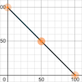
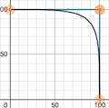
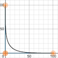
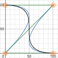

Quick Start
// Create a breaker with functional options
b, err := circuit.NewBreaker(
circuit.WithName("my-api"),
circuit.WithThreshold(5),
circuit.WithWindow(time.Minute),
circuit.WithBackOff(30 * time.Second),
)
if err != nil {
log.Fatal(err)
}
// Run is generic — return type is inferred from your function
result, err := circuit.Run(b, ctx, func(ctx context.Context) (*Response, error) {
return client.Call(ctx, request)
})The function is called synchronously — the caller controls concurrency. If a timeout is configured, it is applied via context.WithTimeout. The runner must respect ctx.Done() for timeouts to take effect.
Running with Type Safety
user, err := circuit.Run(b, ctx, func(ctx context.Context) (*User, error) {
return userService.GetByID(ctx, userID)
})
if err != nil {
switch {
case errors.Is(err, circuit.ErrStateOpen):
// circuit is open — dependency is down
return cachedUser, nil
case errors.Is(err, circuit.ErrStateThrottled):
// circuit is recovering — request was shed
return nil, status.Error(codes.Unavailable, "service recovering")
case errors.Is(err, circuit.ErrTimeout):
// function exceeded the configured timeout
return nil, status.Error(codes.DeadlineExceeded, "upstream timeout")
default:
return nil, err
}
}Error Types
| Error | Description | Affects Error Count |
|---|---|---|
| Your function's error | Returned as-is | Yes |
ErrTimeout | Context deadline exceeded (converted from context.DeadlineExceeded) | Yes |
ErrStateOpen | Circuit is open, request rejected | No |
ErrStateThrottled | Request shed during throttled recovery | No |
ErrNotInitialized | Breaker not created with NewBreaker | No |
ErrUnnamedBreaker | Breaker added to BreakerBox without a name | No |
All circuit errors carry context — use errors.As to extract the breaker name and state. The Error.Is() method compares the base message only, ignoring context fields:
var circErr circuit.Error
if errors.As(err, &circErr) {
log.Printf("breaker=%s state=%s: %s", circErr.BreakerName, circErr.State, circErr.Error())
}Two-Step Mode (Allow/Done)
For HTTP middleware, gRPC interceptors, or any pattern where you don't wrap the call directly:
func CircuitBreakerMiddleware(b *circuit.Breaker) func(http.Handler) http.Handler {
return func(next http.Handler) http.Handler {
return http.HandlerFunc(func(w http.ResponseWriter, r *http.Request) {
done, err := b.Allow(r.Context())
if err != nil {
http.Error(w, "service unavailable", http.StatusServiceUnavailable)
return
}
rec := &statusRecorder{ResponseWriter: w, status: 200}
next.ServeHTTP(rec, r)
// Report the outcome to the breaker
if rec.status >= 500 {
done(fmt.Errorf("HTTP %d", rec.status))
} else {
done(nil)
}
})
}
}Allow checks the breaker state and returns a done callback. Call done(err) after the operation to report the outcome. No timeout is applied — the caller controls timing.
Error Classification
By default, any non-nil error counts as a failure. Customize with two callbacks:
Excluding Errors
Excluded errors are not counted at all — neither as successes nor failures:
b, _ := circuit.NewBreaker(
circuit.WithName("user-api"),
circuit.WithIsExcluded(func(err error) bool {
// Don't count client cancellations against the dependency
return errors.Is(err, context.Canceled)
}),
)Classifying Errors as Successes
Some errors indicate the dependency is healthy but the request was rejected:
b, _ := circuit.NewBreaker(
circuit.WithName("inventory-api"),
circuit.WithIsSuccessful(func(err error) bool {
var httpErr *HTTPError
if errors.As(err, &httpErr) {
return httpErr.StatusCode == 404 || httpErr.StatusCode == 409
}
return false
}),
)Evaluation order: IsExcluded → IsSuccessful → failure.
State Transitions
| From | To | Condition |
|---|---|---|
| Closed | Open | Error count in window exceeds threshold |
| Open | Throttled | Lockout expired (if set) and errors ≤ threshold |
| Throttled | Open | Error count exceeds threshold during recovery |
| Throttled | Closed | Backoff period expired and errors ≤ threshold |
State evaluation is lazy — transitions happen when Run, Allow, State(), or Snapshot() is called. There are no background goroutines. A breaker with no traffic stays in its current state indefinitely.
Lockout
When a circuit breaker opens, it can lock out for a specified duration. During lockout, all requests are rejected with ErrStateOpen, even if the error count drops below the threshold.
b, _ := circuit.NewBreaker(
circuit.WithName("fragile-service"),
circuit.WithThreshold(3),
circuit.WithLockOut(10 * time.Second),
)If no lockout is set, the breaker transitions to throttled as soon as errors drop below the threshold. Combine with WithOpeningResetsErrors(true) for immediate throttling:
b, _ := circuit.NewBreaker(
circuit.WithName("fast-recovery"),
circuit.WithThreshold(5),
circuit.WithOpeningResetsErrors(true), // clear errors on open → immediate throttle
circuit.WithBackOff(15 * time.Second),
)Backoff Strategies
During the throttled state, the breaker probabilistically sheds requests using an EstimationFunc. The backoff duration is divided into 100 ticks. At each tick, the function returns a probability (0–100) that a request should be blocked.
// EstimationFunc takes a tick [1-100] and returns
// the blocking probability [0-100]
type EstimationFunc func(int) uint32
b, _ := circuit.NewBreaker(
circuit.WithName("api-gateway"),
circuit.WithBackOff(30 * time.Second),
circuit.WithEstimationFunc(circuit.Exponential),
)Linear (default)
Steady, proportional decrease in blocking probability. Returns 100 - tick.

Logarithmic
High blocking initially, rapid decrease after the midpoint. Uses a pre-computed curve.

Exponential
Rapid initial decrease, gradual easing toward full throughput. Uses a pre-computed curve.

Ease-In-Out
Smooth S-curve — high blocking early, steep drop at midpoint, gentle finish. Uses a pre-computed curve.

JitteredLinear
Linear with ±5 random jitter to prevent thundering herd effects during recovery.
Custom Strategies
Implement your own EstimationFunc:
// HalfOpen mimics a traditional half-open pattern:
// block everything for the first half, then allow everything
func HalfOpen(tick int) uint32 {
if tick <= 50 {
return 100 // block all
}
return 0 // allow all
}Observability
State Change Notifications
Every breaker exposes a 16-element buffered channel for state change events. Events include full timing information via the BreakerState struct:
type BreakerState struct {
Name string `json:"name"`
State State `json:"state"`
ClosedSince *time.Time `json:"closed_since,omitempty"`
Opened *time.Time `json:"opened,omitempty"`
LockoutEnds *time.Time `json:"lockout_ends,omitempty"`
Throttled *time.Time `json:"throttled,omitempty"`
BackOffEnds *time.Time `json:"backoff_ends,omitempty"`
}b, _ := circuit.NewBreaker(circuit.WithName("my-service"))
go func() {
for state := range b.StateChange() {
log.Printf("breaker %s: %s", state.Name, state.State)
}
}()Or use a callback for inline handling. The callback runs after the state mutex is released, so it does not block other requests:
b, _ := circuit.NewBreaker(
circuit.WithName("my-service"),
circuit.WithOnStateChange(func(name string, from, to circuit.State) {
log.Printf("breaker %s: %s -> %s", name, from, to)
}),
)Metrics Collection
Implement the MetricsCollector interface for Prometheus, StatsD, OpenTelemetry, etc. All methods must be safe for concurrent use:
type MetricsCollector interface {
RecordSuccess(breakerName string, duration time.Duration)
RecordError(breakerName string, duration time.Duration, err error)
RecordTimeout(breakerName string)
RecordStateChange(breakerName string, from, to State)
RecordRejected(breakerName string, state State)
RecordExcluded(breakerName string, err error)
}RecordError includes the error itself, enabling classification by error type in dashboards.
Snapshots
Get a JSON-serializable point-in-time snapshot. Both State and BreakerState implement MarshalJSON/UnmarshalJSON:
// Expose as a health check endpoint
func healthHandler(b *circuit.Breaker) http.HandlerFunc {
return func(w http.ResponseWriter, r *http.Request) {
snap := b.Snapshot()
w.Header().Set("Content-Type", "application/json")
if snap.State == circuit.Open {
w.WriteHeader(http.StatusServiceUnavailable)
}
json.NewEncoder(w).Encode(snap)
}
}Managing Multiple Breakers
Use BreakerBox to manage breakers for multiple dependencies. It uses sync.Map internally for thread-safe storage:
box := circuit.NewBreakerBox()
userBreaker, _ := box.Create(
circuit.WithName("user-service"),
circuit.WithThreshold(5),
)
// All state changes from Create'd breakers are forwarded to the box channel
go func() {
for state := range box.StateChange() {
log.Printf("[%s] %s", state.Name, state.State)
}
}()LoadOrCreate
Lazy initialization in request handlers — safe for concurrent callers. A sync.Mutex serializes creation to prevent TOCTOU races, so only one breaker is ever created per name:
b, err := s.box.LoadOrCreate("user-service",
circuit.WithThreshold(5),
circuit.WithBackOff(30 * time.Second),
)AddBYO
Add externally-created breakers to the box for storage and retrieval. State changes from BYO breakers are not forwarded to the box channel:
b, _ := circuit.NewBreaker(circuit.WithName("custom"))
err := box.AddBYO(b)Panic Handling
If the function passed to Run panics, the panic is recorded as a failure (incrementing the error count), then re-raised so the caller's recovery logic can handle it:
defer func() {
if r := recover(); r != nil {
log.Printf("caught panic: %v", r)
}
}()
circuit.Run(b, ctx, func(ctx context.Context) (string, error) {
panic("something went wrong")
})API Reference
Constructors
NewBreaker(opts ...Option) (*Breaker, error)
Creates a new circuit breaker. All breakers must be created with this function. Auto-generates a name from the caller's file/line if none is provided.
NewBreakerBox() *BreakerBox
Creates a breaker manager with a shared state change channel for all breakers created via Create().
Execution
Run[T](b, ctx, fn) (T, error)
Generic, type-safe execution. Applies timeout via context.WithTimeout, catches panics, converts context.DeadlineExceeded to ErrTimeout.
b.Allow(ctx) (func(error), error)
Two-step mode. Returns a done callback for reporting outcomes. No timeout applied.
Breaker Methods
b.Name() string
Returns the breaker's name.
b.State() State
Returns the current state. Triggers lazy evaluation of state transitions.
b.Size() int
Returns the number of errors in the current sliding window.
b.Snapshot() BreakerState
Returns a JSON-serializable point-in-time snapshot with timing information.
b.StateChange() <-chan BreakerState
Returns a read-only channel (buffered, 16 elements) that receives state change events.
BreakerBox Methods
box.Create(opts) (*Breaker, error)
Creates a breaker whose state changes are forwarded to the box channel.
box.Load(name) *Breaker
Fetches a breaker by name. Returns nil if not found.
box.LoadOrCreate(name, opts) (*Breaker, error)
Thread-safe load-or-create. Only one breaker is created per name.
box.AddBYO(b) error
Adds an externally-created breaker. State changes are not forwarded.
State Constants
Closed, Throttled, Open
State type (uint32) with String(), MarshalJSON(), and UnmarshalJSON() methods.
Default Constants
DefaultTimeout = 10s
Default context timeout applied by Run.
DefaultBackOff = 1m
Default throttled recovery duration.
DefaultWindow = 5m
Default sliding window for error counting.
Estimation Functions
Linear, Logarithmic, Exponential, EaseInOut, JitteredLinear
Built-in EstimationFunc implementations. Takes tick [1-100], returns blocking probability [0-100].
Configuration Reference
| Option | Default | Minimum | Description |
|---|---|---|---|
WithName(s) | auto-generated | — | Breaker identifier |
WithTimeout(d) | 10s | — | Context timeout applied to Run |
WithThreshold(n) | 0 (opens on first error) | — | Max errors in window before opening |
WithWindow(d) | 5m | 10ms | Sliding window for error counting |
WithBackOff(d) | 1m | 10ms | Duration of throttled recovery |
WithLockOut(d) | 0 (no lockout) | — | Forced-open duration before throttling |
WithEstimationFunc(f) | Linear | — | Throttle probability curve |
WithOpeningResetsErrors(v) | false | — | Clear error count when opening |
WithIsSuccessful(fn) | nil | — | Classify errors as successes |
WithIsExcluded(fn) | nil | — | Exclude errors from tracking |
WithMetrics(m) | nil | — | Metrics collector implementation |
WithOnStateChange(fn) | nil | — | State transition callback (runs after mutex release) |